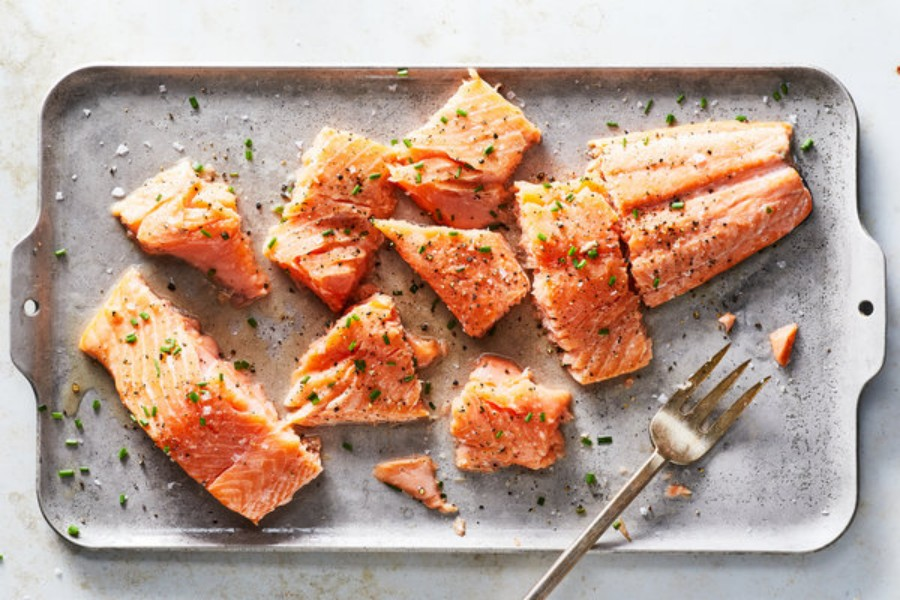

Home
Salmon
Salmon

Quick, easy grilled salmon.
salmon is enjoyed in more than 100 countries around the world. Part of the reason for this is the versatility of the fish – the way it lends itself to many different recipes and styles of cooking.
Ingredients
- 2 tablespoons dark brown sugar
- 2 tablespoons apple cider vinegar
- 2 tablespoons olive oil
- 1 teaspoon Dijon mustard
- 1/2 teaspoon coarsely ground black pepper
- 8 ounces shredded Colby cheese
- 6 (3 ounce) fillets salmon fillets, thawed
Directions
- Combine brown sugar, apple cider vinegar, olive oil, Dijon mustard, and pepper in a bowl for the marinade.
- Place salmon fillets into a shallow glass dish and pour 1/2 of the marinade over the fish. Reserve remaining marinade. Cover and refrigerate for 1 hour.
- Preheat an outdoor grill for medium heat and lightly oil the grate. Discard marinade from the glass dish.
- Grill salmon, brushing with reserved marinade several times, until it flakes easily with a fork, 4 to 6 minutes.